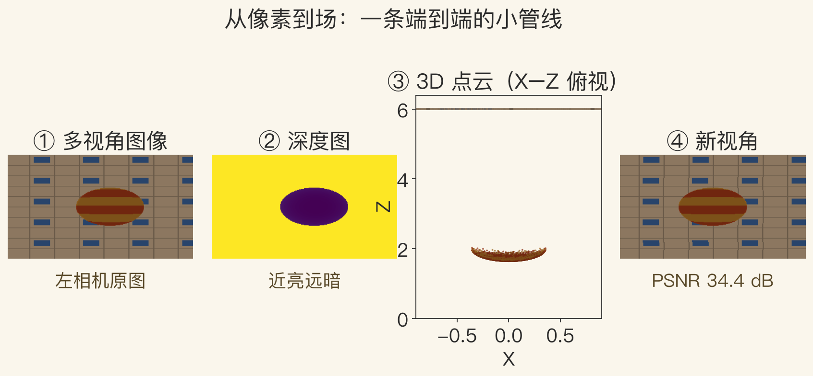
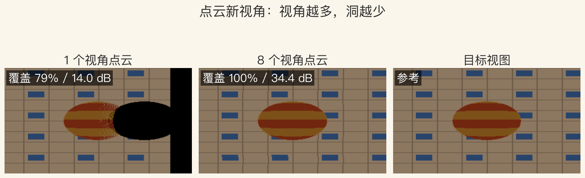
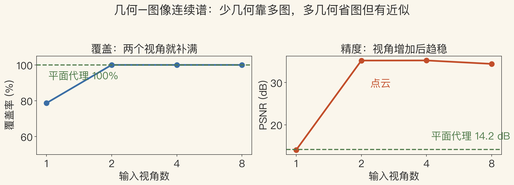

第 13–14 章 · 收官
第 13 章建场，第 14 章看场
第 13 章：立体、SfM、稠密深度到网格。
第 14 章：视图插值、光场到神经渲染。
两章连成一条线：像素→场→新视角。
本集用合成小实验走一遍流程。
依据：原书第 854–886 页
两条线
第 13 章：怎么建
第 14 章：怎么画
实验只做合成球和平面
正课第一百二十六集
01 / 12
3D 摄影 · 原书第 854 页
从多张照片到带色模型
从多图建完整模型，再恢复表面外观。
五步：匹配、SfM、稠密深度、建模、纹理。
特征匹配找同名点，SfM 求相机位姿。
稠密深度补像素，建模连面，纹理贴色。
依据：原书第 854 页
每一步都可能出错
真实系统要人工检查
出错要能回退
本集给定位姿和深度
正课第一百二十六集
02 / 12
三条路线 · 原书第 854–855 页
自动、商业、交互三种做法
ARC3D：网页端自动 3D 建模。
Pix4D：商业摄影测量，物体场景都能拍。
VideoTrace：自动跟踪，在点云上画三角面。
三条路各有取舍，看场景选。
依据：原书第 854–855 页
三种定位
ARC3D 求省事
Pix4D 求产品化
VideoTrace 求可控
正课第一百二十六集
03 / 12
图像渲染 · 原书第 863 页
重建加渲染，做出可交互体验
图像渲染把三维重建和多视图渲染结合。
Google Maps 街景、Photosynth 是商业形态。
第 13 章提供场，第 14 章提供相机。
核心是重建与渲染之间的接口。
依据：原书第 863 页
接口
接口好：图像和几何互相补
接口差：只能切换原图
本集只做合成新视角
正课第一百二十六集
04 / 12
实验一 · 端到端管线
四步：图像、深度、点云、新视角
多视角图像先转成深度图。
深度图把每个像素变成三维点。
点云在目标视角重新投影。
z-buffer 决定前后，视角越多洞越少。
依据：本集实验；原书第 854 页

图像→深度→3D 点云→新视角四步管线｜程序生成，未用教材或论文原图
正课第一百二十六集
05 / 12
视图插值 · 原书第 863 页
先补两幅参考图之间的视角
视图插值用预计算深度图做无缝过渡。
视图相关纹理在模型表面混合多张纹理。
LDI 和带深度 sprite 是常见变体。
这一路都假设有几何、有参考图。
依据：原书第 863 页
共同点
有几何
有参考图
任务是补中间视角
正课第一百二十六集
06 / 12
实验二 · 视角数量
少视角有洞，多视角补满
1 个视角：覆盖率 78.7%，PSNR 14.02 分贝。
8 个视角：覆盖率 100%，PSNR 34.42 分贝。
4 个视角 35.23 分贝，之后趋稳。
8 个视角略低，是泼溅噪声。
依据：本集实验（readings.coverage/psnr_cloud）

1 视角点云 / 8 视角点云 / 目标，覆盖 78.7%→100%｜程序生成，未用教材或论文原图
正课第一百二十六集
07 / 12
光场 · 原书第 863 页
用更多采样换自由视点
光场和 Lumigraph 用四维表示。
可以从任意视点渲染。
变体：非结构 Lumigraph、表面光场、同心拼图、环境遮罩。
环境遮罩专处理玻璃、水杯的折射。
依据：原书第 863 页
代价与收益
采样多，数据量大
渲染可以很快
表面光场贴到物体表面
正课第一百二十六集
08 / 12
实验三 · 几何与图像的权衡
几何–图像连续谱
覆盖率随视角数：2 个视角就补满。
PSNR：1 个 14.02，2 个 35.21，4 个 35.23。
8 个视角 34.42，略低于 4 个。
平面代理没有洞，但 PSNR 只有 14.16。
依据：本集实验（readings.psnr_cloud/psnr_proxy）

覆盖率/PSNR vs 视角数；平面代理 14.16dB｜程序生成，未用教材或论文原图
正课第一百二十六集
09 / 12
视频与神经渲染 · 原书第 863 页
从图像到视频，再到可交互空间
视频渲染生成新的视频体验。
包括人脸动画、视频纹理、3D 视频和漫游。
视频纹理让短视频无缝循环。
神经渲染用生成网络重建场景、物体和人。
依据：原书第 863 页
自由度更高
3D 视频在相机之间插
漫游沿路径走
数据和算力要求也更高
正课第一百二十六集
10 / 12
几何–图像连续谱 · 原书第 886 页
没有唯一最优，只有匹配场景
表示从经典纹理网格排到纯采样光场。
视图相关几何、多深度图绕开一致 3D 几何。
深度 sprite 和 LDI 用颜色加几何 warp。
选择取决于图像数量、质量和应用。
依据：原书第 886 页
两种偏向
几何多：省图，容易近似
图像多：保真，数据重
近邻视角用图像式更保真
正课第一百二十六集
11 / 12
总结 · 移交 E135
重建管有什么，渲染管怎么看
第 13 章：像素变成场。
第 14 章：场变成新视角。
几何和图像互相补，按场景选表示。
下一集：第 15 章结论。
依据：原书第 854–886 页
两个词
重建：场景有什么
渲染：从哪个位置看
连续谱连接两者
正课第一百二十六集
12 / 12